ChatGPT的火爆，让一部分人欣喜的同时，也让另一部分人担忧。尤其是客服、岗位、内容等岗位的同学，会担忧AI机器人能否取代其工作？AI机器人真实的落地效果如何？AI机器人能完成到哪种程度？句子互动CMO张佳就做了一个测试，以运营工作为例，他试着把日常工作内容交给AI，从私域IP 打造、文案话术到活动策划，结合了具体业务把需求分配给AI 工具，并记录了真实反馈。随着分配任务复杂度的逐渐提升，他也从最开始的欣喜，慢慢感觉五味杂陈......最后，他通过测试得出一个结论：能驾驭 AI 的人不会被取代。由于当下的主流 AI 产品都是基于人工提示词，因此在本轮浪潮中，能清晰表达自己需求的人，会更好地驾驭AI工具，从而提升运营效率。也因此，张佳得出了以上结论。关于这一话题的讨论。如下，enjoy:
IP 打造篇
-www.juzibot.com-
我假装自己是“某气森林”的同学，为 AI 工具介绍了它的产品调性和私域营销目的后，让它帮我取名、设计头像甚至生成了适合在图片生成类 AI 工具中使用的 prompt（提示词）。
1）账号和社群起名
账号名字给了 5 个备选看起来都还不错，但跟某气森林的账号名字（元子/小元气）相比还差点意思。在让AI 起社群名时，我尝试多次反馈让 AI 尽量起的“潮”一点，甚至给到了完美日记的社群名供它参考，结果依然比较土……不过它能够在给到建议的社群名的同时，提供针对这个名字的立意解释，已经远超预期了！
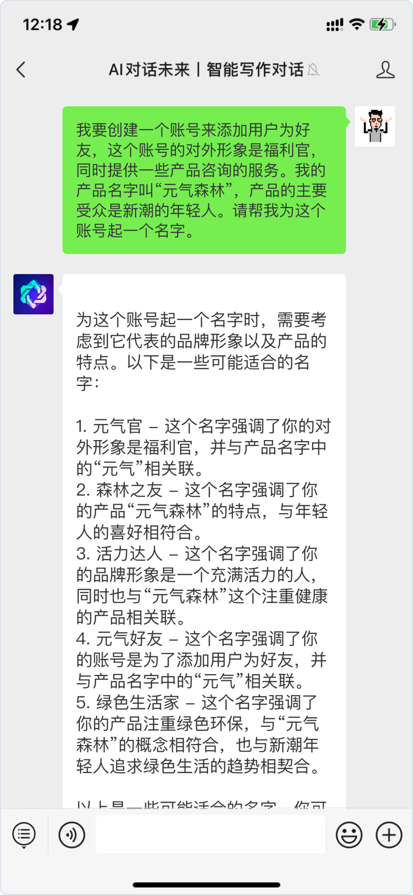
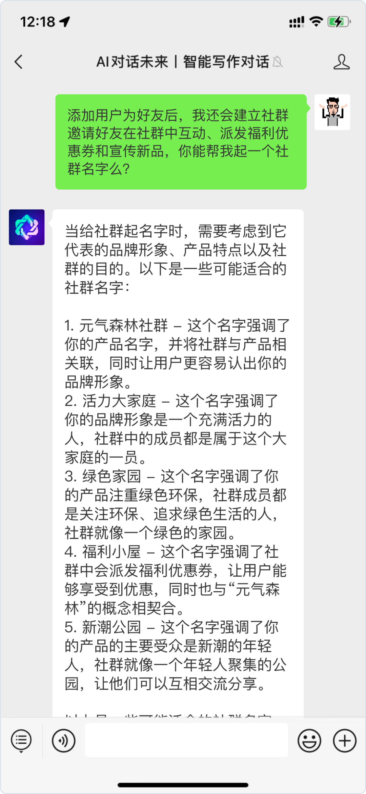
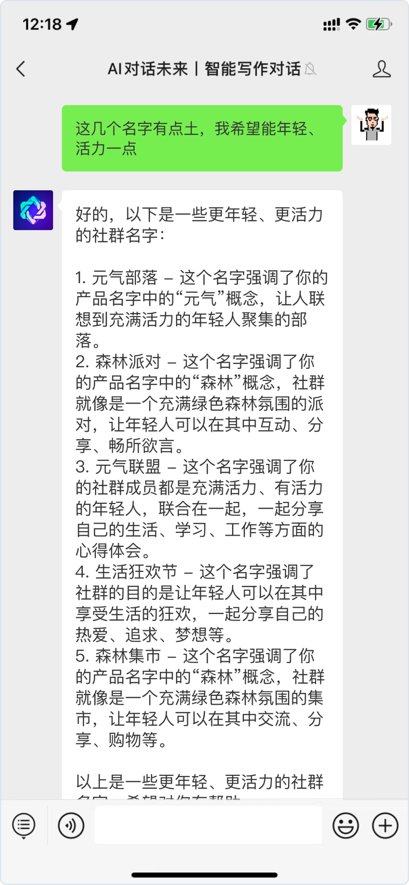
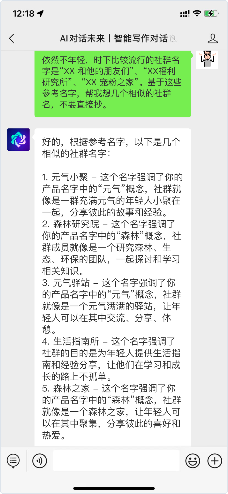
👈 滑 动 查 看 更 多 测 试 截 图
2）设计头像
我尝试让文本生成 AI 工具基于前面得到的账号昵称输出了头像设计需要的元素、色彩、风格等相关信息，然后让它帮我生成了图片生成 AI 工具可以理解的 prompt（提示词）。但是这些词我放到 Stable Diffusion 模型中以后，生成的头像并不是很理想……
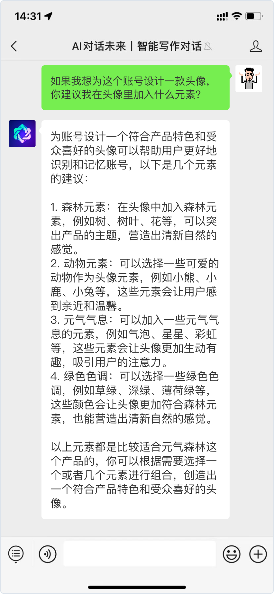
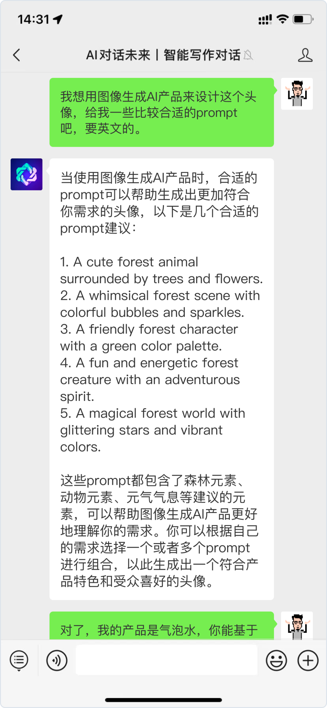
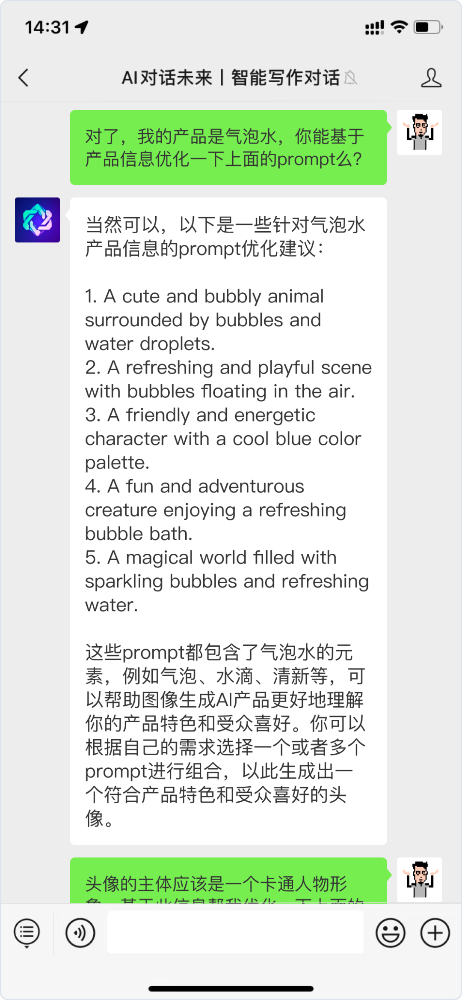
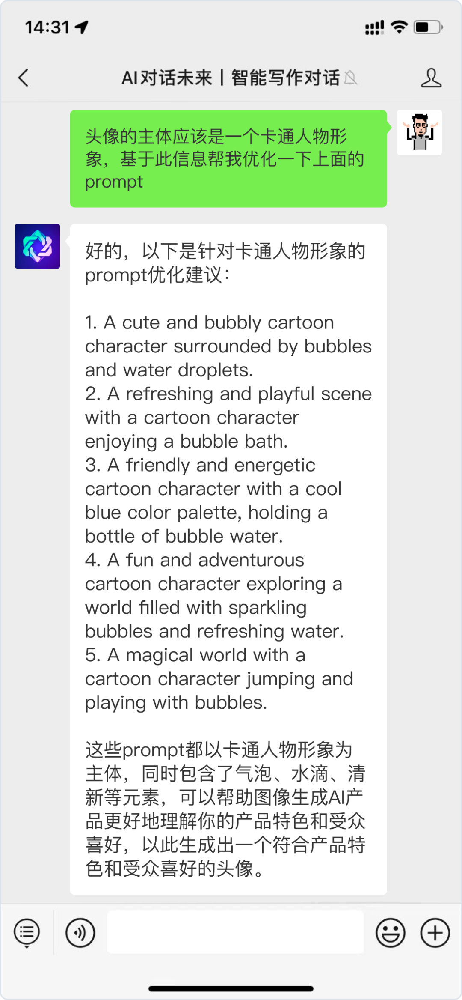
👈 滑 动 查 看 更 多 测 试 截 图
话术文案篇
-www.juzibot.com-
写文案话术，应该是运营工作中最头疼的部分，没有之一。
我按照运营阶段划分，让 AI 帮我生成了欢迎语、入群邀请话术、群规、群公告以及营销活动相关的话术。经过几轮调教，AI 生成的内容已经比大部分品牌投产在实际业务中的话术要好了。
低转高作为私域领头行业必备的玩法，必须让 AI 也来试一试。给到 AI 关于待销售产品的信息，为了测试它的“答题”能力，我甚至给它增加了“支线任务”。作为一个最终训练数据截止到 2021 年的 AI 产品，我甚至怀疑它的训练数据中是包含国内对 K12 教育公司私域案例拆解文章的……当然 AI 也有不聪明的地方，由于我在前面的对话中告诉过它写话术要以 emoji 表情开头，所以在让它帮我生成话术的时候它不厌其烦的给我加上了 3 个 emoji……关键是每个 emoji 都特别符合话术场景……
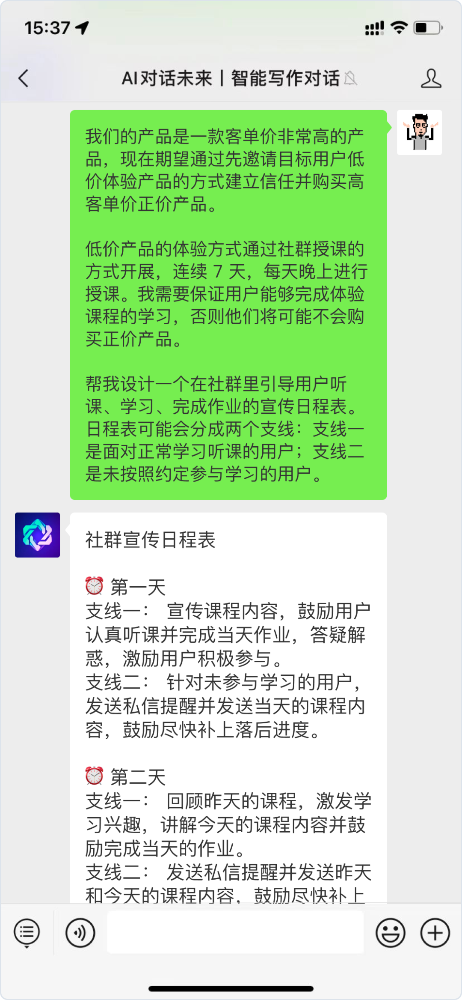
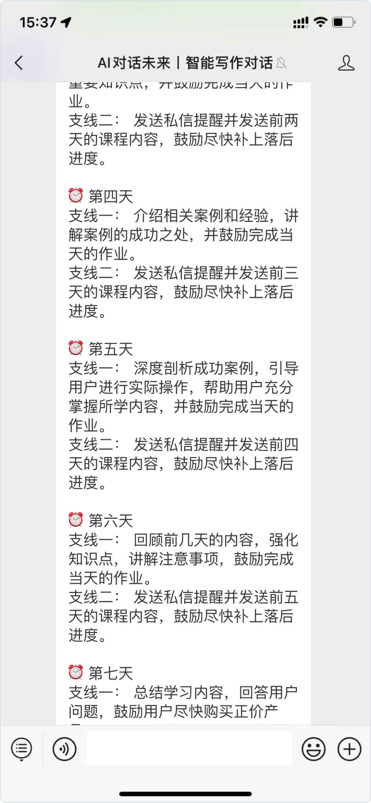
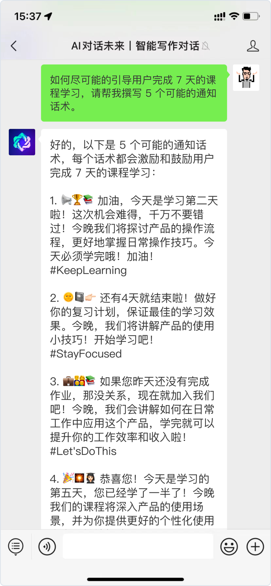
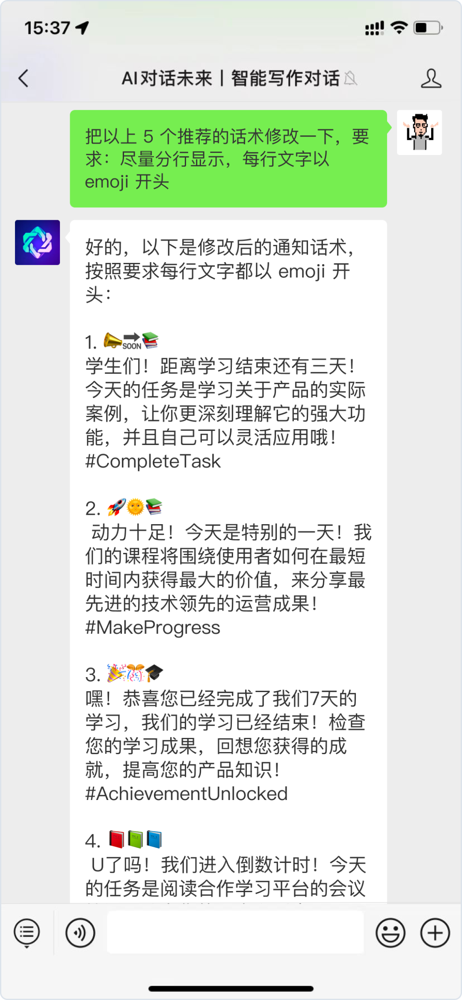
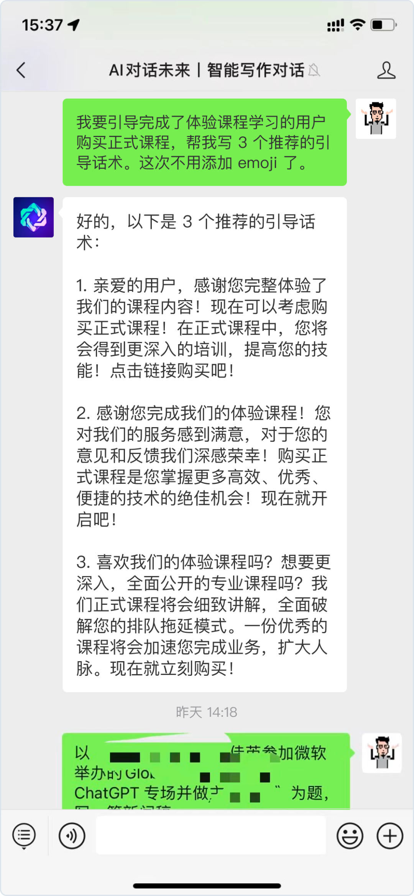
👈 滑 动 查 看 更 多 测 试 截 图
一些思考
AI 将取代还是助力运营？
-www.juzibot.com-
从 AI 在私域运营各个关键环节在生成内容和解决问题的能力来看，它的出现和发展确实可能导致部分运营同学失业。但如果你仔细看了我和 AI 的每一轮对话，你会发现：想要让 AI 给到足够优秀的反馈，背后需要提问的人对产品、业务和目标有非常充分的理解，起码私域运营的一些基础知识要非常熟悉（如什么样的话术呈现形式是适合在私域里发的），否则 AI 给到的答案无法令人满意。因此，实测过程背后可见两个结论：结论一：鉴于当下的主流 AI 产品都是基于提示词的，那意味着至少在这一轮，能够清晰表达需求的人会因为能够更好的驾驭 AI 为自己工作而变得更有价值。结论二：（对了，这个结论不知道是谁首先提出，却被广泛认可，同样也包括我的这次实测）AI 不会取代你，会用 AI 的人会取代你。 如果你对大语言模型在对话场景下的应用感兴趣可以关注下方公众号体验